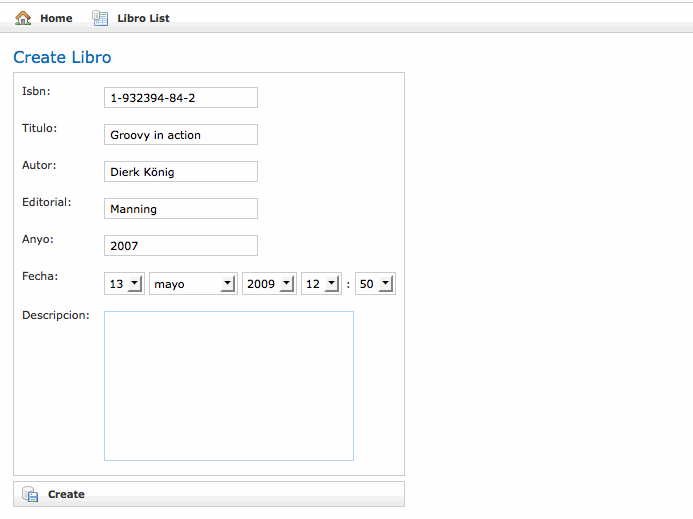

Introducción a Grails
En esta primera sesión de Grails, comenzaremos, como no puede ser de otra forma, viendo una descripción de lo que es Grails, sus características y las ventajas que conlleva su uso como entorno para el desarrollo rápido de aplicaciones. Seguiremos analizando su arquitectura y las herramientas de código abierto que aúna Grails y terminaremos desarrollando nuestra primera aplicación en Grails aprovechándonos del scaffolding.
¿Qué es?
Grails es un framework para el desarrollo de aplicaciones web basado en el lenguaje de programación Groovy, que a su vez se basa en la Plataforma Java. Grails está basado en los paradigmas convención sobre configuración y DRY (don't repite yourself) o no te repitas, los cuales permiten al programador olvidarse en gran parte de los detalles de configuración de más bajo nivel.
Como la mayoría de los framework de desarrollo web, Grails está basado en el patrón Modelo Vista Controlador (MVC). En Grails los modelos son tratados como clases de dominio que permiten a la aplicación mostrar los datos utilizando la vista. A diferencia de otros frameworks, en Grails las clases de dominio de Grails son automáticamente persistidas y es incluso posible generar el esquema de la base de datos. Los controladores por su parte, permiten gestionar las peticiones a la aplicación y organizar los servicios proporcionados. Por último, la vista en Grails son las conocidas como Groovy Server Pages (GSP) (análogamente a las Java Server Pages -JSP-) y habitualmente se encargan de generar el contenido de nuestra aplicación en formato HTML.
Como comentábamos anteriormente, Grails permite al programador olvidarse de gran parte de la configuración típica que incluyen los frameworks MVC. Además Grails se aprovecha de un lenguaje dinámico como Groovy para acortar los tiempos de desarrollo y que el equipo de desarrolladores puedan centrarse simplemente en escribir código, actualizar, testear y depurar fallos. Esto hace que el desarrollo de la aplicación sea mucho más ágil que con otros frameworks MVC.
Habitualmente cuando hablamos de frameworks, se entiende como un marco de los programadores pueden utilizar las técnicas del Modelo Vista Controlador para el desarrollo rápido de sus aplicaciones. Pero, ¿qué pasa con el resto de elementos necesarios para el desarrollo de una aplicación como pueden ser los servidores web o los gestores de bases de datos?. En este sentido, Grails no es simplemente un framework sino que es más una plataforma completa, puesto que incluye también un contenedor web, bases de datos, sistemas de empaquetado de la aplicación y un completo sistema para la realización de tests. De esta forma, no debemos perder el tiempo buscando y descargando un servidor web para nuestra futura aplicación o un gestor de base de datos. Ni tan siquiera será necesario escribir complicados scripts de configuración para el empaquetado de la aplicación. Todo esto se convierte en una tarea tan sencilla como instalar Grails.
Características de Grails
Algunas de las características más importantes que presenta Grails son las siguientes:
-
Convención sobre configuración
En lugar de tener que escribir interminables archivos de configuración en formato XML, Grails se basa en una serie de convenciones para que el desarrollo de la aplicación sea mucho más rápido y productivo. Además, gracias al uso de convenciones, se refuerza el otro principio del que hablábamos anteriormente, DRY (don't repite yourself) o no te repitas.
-
Tests
Una de las partes más importantes en el desarrollo de software se refiere a los tests implementados que garantizan un software de calidad y el fácil mantenimiento de una aplicación. Gracias a estos tests, es muy sencillo detectar y solucionar fallos provocados por cambios en el código. Cada vez que se genera en Grails una clase de dominio o un controlador, paralelamente es generado también un test para comprobar la nueva clase o controlador.
Grails distingue entre tests unitarios y tests de integración. Los tests unitarios son tests sin dependencias de ningún tipo, salvo algún que otro objeto mock. Por otro lado, los tests de integración tienen acceso completo al entorno de Grails, incluyendo la base de datos. Además, Grails permite también la creación de tests funcionales para comprobar la funcionalidad de nuestra aplicación web.
-
Scaffolding
Grails permite también utilizar scaffolding en nuestras aplicaciones. El scaffolding es una característica de determinados frameworks que permite la generación automática de código para las cuatro operaciones básicas de cualquier aplicación, que son la creación, lectura, edición y borrado, lo que en inglés se conoce como CRUD (create, read, update and delete). El scaffolding en Grails se consigue escribiendo muy pocas líneas de código, con lo que podemos centrarnos en especificar las propiedades, comportamientos y restricciones de nuestras clases de dominio.
-
Mapeo objeto-relacional
Grails incluye un potente framework para el mapeo objeto-relacional conocido como GORM (Grails Object Relational Mapping). Como cualquier framework de persistencia, GORM permite mapear objetos contra bases de datos relacionales y representar relaciones entre dichos objetos del tipo uno-a-uno, uno-a-muchos y muchos-a-muchos.
-
Plugins
Sin embargo, Grails no siempre es la solución a cualquier problema que se nos pueda plantear en el desarrollo de aplicaciones web. Para ayudarnos, Grails dispone de una arquitectura de plugins con una comunidad de usuarios detrás (cada vez más grande) que ofrecen plugins para seguridad, AJAX, testeo, búsqueda, informes y servicios web. Este sistema de plugins hace que añadir complejas funcionalidades a nuestra aplicación se convierte en algo muy sencillo.
Software de código abierto
Por suerte, Grails no sufre del síndrome Not Invented Here (NIH) y lo hace integrando en su arquitectura las mejores soluciones de software libre del mercado para crear un framework robusto. Veamos cuales son estas soluciones.
-
Groovy
Groovy es la parte fundamental en la que se basa Grails. Como vimos en sesiones anteriores, Groovy es un potente y flexible lenguaje de programación. Su integración con Java, las características como lenguaje dinámico y su sintaxis sencilla, hacen de este lenguaje de programación el compañero perfecto para Grails.
-
Framework Spring
El framework Spring ofrece un alto nivel de abstracción al programador que en lugar de tratar directamente con las transacciones, proporciona una forma para declarar dichas transacciones utilizando los POJOs (Plain Old Java Objects), con lo que el programador se puede centrar en la implementación de la lógica de negocio.
-
Hibernate
Hibernate es un framework de persistencia objeto-relacional y constituye la base de GORM. Es capaz de mapear complejas clases de dominio contra las tablas de una base de datos, así como establecer las relaciones entre las distintas tablas.
-
SiteMesh
SiteMesh es un framework web para el renderizado de documentos HTML que implementa el patrón de diseño Decorator con componentes como cabeceras, pies de páginas y sistemas de navegación.
-
Frameworks AJAX
La creciente popularidad de la llamada Web 2.0, he hecho que se hayan introducido tres populares frameworks de AJAX en Grails. Estos frameworks son script.aculo.us, Rico y Prototype. Además, algunos librerías de etiquetas de Grails integran el uso de estos frameworks para hacer su uso más fácil a los que trabajan por primera vez con AJAX.
-
Jetty y Tomcat
Como comentábamos anteriormente, Grails es una plataforma completa, y esto es en parte gracias a la inclusión de un servidor web como Jetty o Tomcat. Esto no significa que Grails solo funcione con estos dos servidores de aplicaciones y más adelante veremos como desplegar aplicaciones de Grails en otros servidores.
-
HSQLDB
Grails también incluye un gestor de bases de datos relacionales como HSQLDB. Podemos utilizar este gestor de base de datos en memoria o almacenando en disco su información. Esto tampoco quiere decir que nuestras aplicaciones desarrolladas en Grails sólo funcionen con HSQLDB, sino que para desarrollar nuestra aplicación no vamos a necesitar ningún gestor de base de datos externo.
-
JUnit
Para los tests unitarios, el equipo de Grails se decidió por un framework muy conocido en la comunidad Java como es JUnit.
Arquitectura
Ahora que ya tenemos una idea de lo que es Grails y las ventajas que nos puede aportar a la hora de desarrollar nuestros proyectos web, veamos gráficamente su arquitectura.
Podemos decir que la arquitectura de Grails está formada por cuatro capas claramente diferenciadas. La base de la arquitectura de Grails es la máquina virtual de Java. Por encima de ésta se encuentran los lenguajes de programación en lo que está basado Grails, Java y Groovy. En la tercera capa tenemos el propio framework Grails, al cual le acompañan todos los frameworks de los que hablábamos en la sección anterior, SiteMesh, Spring, GORM, etc. En esta capa también se ha añadido una opción abierta como es la posibilidad de incluir otras librerías externas que no están incluidas en Grails. La última capa está formada por la aplicación en si, siguiendo el patrón modelo vista controlador.
Por otro lado, Grails incluye una herramienta en línea de comandos para facilitarnos la escritura de código y gestionar nuestros proyectos en Grails. Esta herramienta está basada en Gant, un sistema de automatización de tareas basado en Apache Ant.
Desde el punto de vista de la ejecución de un proyecto Grails, se podría esquematizar de la siguiente forma:
De la imagen podemos concluir que una página web realiza una petición al servidor web. Esta petición se pasa a un controlador, el cual podrá utilizar o no una clase de dominio (modelo). Esta clase de dominio puede ser a su vez estar persistida en una base de datos gracias a GORM. Una vez el controlador termina, pasa la petición al correspondiente GSP para que renderice la vista y sea enviada de nuevo al navegador en forma de página HTML.
Instalación de Grails
Si tenemos en cuenta lo que decíamos anteriormente de que Grails es un completo framework con un servidor web, un gestor de base de datos y el resto de características ya comentadas, podríamos pensar que su instalación puede ser muy complicada. Sin embargo, la instalación de Grails se convierte en un juego de niños, ya que nos olvidamos de tener que buscar soluciones externas para cada uno de los aspectos relacionados con el desarrollo de una aplicación web.
Estos son los pasos para instalar grails en nuestro ordenador:
- Descargar la última versión de Grails desde la web http://grails.org/Download
- Descomprime el archivo en el directorio que quieras
- Crea la variable de entorno GRAILS_HOME para que apunte al directorio donde hayas descomprimido el archivo anterior
- Agrega el directorio GRAILS_HOME/bin al PATH
Una vez hayamos hecho esto, ya podremos ejecutar en línea de comando los comandos de Grails que veremos a partir de ahora.
El único prerrequisito de Grails es que debes tener instalado al menos el JDK 1.4 y tener configurada la variable de entorno JAVA_HOME. Con esto simplemente, ya tendríamos configurado nuestro equipo para que puedas desarrollar tus proyectos con Grails.
Scaffolding
A lo largo de este curso, vamos a desarrollar un ejemplo de lo que sería el completo desarrollo de una aplicación web referida a una biblioteca. Empezaremos desarrollando este ejemplo de aplicación para explicar como Grails implementa el scaffolding. Pero, ¿qué es el scaffolding?
El scaffolding es un término utilizado en programación para designar la construcción automática de aplicaciones a partir del esquema de la base de datos. Está soportado por varios frameworks MVC y Grails no podía ser menos y el equipo de desarrollo decidió incluirlo entre sus características más importantes. La idea del scaffolding es, partiendo del esquema de la base de datos, generar el código necesario para implementar las cuatro operaciones básicas en cualquier aplicación, que son: creación, lectura, actualización y borrado. Este tipo de aplicaciones se las conoce como CRUD (create, read, update y delete).
Vamos a ver un ejemplo de lo que es el scaffolding, desarrollando una parte reducida de la aplicación ejemplo que veremos durante este curso. Veamos en que consiste esta aplicación.
Descripción de la aplicación ejemplo
La aplicación que vamos a desarrollar servirá para la gestión de una biblioteca de un instituto. Básicamente, la aplicación deberá gestionar los posibles usuarios (administrador, bibliotecario, profesor o socio). Los administradores serán los encargados de la creación de los usuarios, mientras que los bibliotecarios serán los únicos responsables de la gestión de los libros y los préstamos.
Los profesores y los socios podrán realizar reservas, con la única diferencia de las características de las mismas, puesto que los profesores podrán reservar más libros y durante más tiempo que los socios. Esta reserva la realizará un bibliotecario que formalizará el préstamo a nombre de un profesor o un socio. Cuando un usuario se retrase en la devolución de un libro, se le impondrá una multa determinada con una fecha de inicio y una fecha fin.
Veamos como quedaría el diagrama conceptual de datos de nuestra aplicación
Para empezar, nosotros nos vamos a quedar con un esquema reducido de esta diagrama y simplemente utilizaremos las relaciones entre las tabla Operacion, Usuario y Libro. Pongamos manos a la obra.
Creación del proyecto Grails
Si todo ha ido bien en la instalación de Grails, podremos crear nuestra primera aplicación en Grails gracias al comando grails. Este será el comando que utilizaremos a lo largo de todo el curso para crear todas las partes de nuestra aplicación. Para ver un listado completo de las opciones del comando grails, podemos ejecutar grails help. Si echamos un primer vistazo a esta listado, descubriremos la opción create-app, la cual nos servirá para crear la estructura de directorios de la aplicación. Ejecutamos grails create-app biblioteca y se nos generará el directorio biblioteca con el siguiente contenido:
Esta estructura de directorios generada automáticamente por Grails viene como consecuencia de lo que comentábamos anteriormente como uno de los paradigmas en que se basa Grails, convención sobre configuración. De esta forma, Grails nos genera la estructura de directorios que albergará todo nuestro proyecto para que nosotros lo vayamos completando. Veamos para que sirven los directorios más importantes generados dentro de nuestro proyecto biblioteca.
| Directorio | Descripción |
|---|---|
| grails-app/conf | Ficheros de configuración de la aplicación |
| grails-app/conf/hibernate | Archivos de mapeado de Hibernate |
| grails-app/conf/spring | Archivos de mapeado de Spring |
| grails-app/controllers | Controladores de la aplicación que gestionan las peticiones |
| grails-app/domain | Clases de dominio del modelo |
| grails-app/i18n | Mensajes para la internacionalización de la aplicación |
| grails-app/services | Servicios |
| grails-app/taglib | Librerías de etiquetas dinámicas |
| grails-app/utils | Utilidades específicas de Grails |
| grails-app/views | Archivos GSP |
| grails-app/views/layout | Archivos de diseño de las páginas web |
| lib | Archivos JAR de terceras partes, tales como controladores de bases de datos |
| scripts | Scripts GANT para el automatizado de tareas |
| src/java | Archivos fuente adicionales en Java |
| src/groovy | Archivos fuente adicionales en Groovy |
| test/integration | Tests de integración |
| test/unit | Tests unitarios |
| web-app | Artefactos web que finalmente serán comprimidos a un WAR (Web Application Archive) |
| web-app/css | Hojas de estilo |
| web-app/images | Imágenes de la aplicación |
| web-app/js | Javascript |
| web-app/WEB-INF | Archivos de configuración para Spring o SiteMesh |
Ahora que ya tenemos una primera idea de lo que significa cada uno de los directorios generados por Grails al crear un proyecto, vamos a abrirlo con el editor NetBeans. Grails es capaz de crear también los archivos de configuración necesarios para que podamos editar el proyecto con diferentes editores como Eclipse, Textmate y NetBeans, con lo que simplemente abrimos NetBeans y localizamos el proyecto biblioteca. Como vemos en la imagen, NetBeans ha cambiado la estructura de directorios por una más clara para el desarrollador.
Nuestro proyecto ya está listo para ser ejecutado, aunque imaginarás que por el momento no hará nada. Para ver la primera versión del proyecto biblioteca podemos ejecutar el comando grails run-app, que nos generará una aplicación en la dirección http://localhost:8080/biblioteca. El comando grails run-app lo que ha hecho es crear una instancia del servidor web Tomcat en el puerto 8080 y cargar en él la aplicación biblioteca. Por ahora esta aplicación hace más bien poco y simplemente nos muestra un mensaje de bienvenida, pero vamos a ver lo sencillo que es generar su contenido.
Creación de clases de dominio
Al desarrollar una aplicación de este tipo, lo normal es crear en primer lugar las clases de dominio necesarias para después pasar a generar los controladores, así que vamos a empezar creando la clase de dominio referente a los Libros. En Grails tenemos el comando grails create-domain-class para generar una determinada clase de dominio, con lo que si ejecutamos grails create-domain-class libro, grails nos creará la estructura necesaria para los libros de nuestra biblioteca. En caso de no indicar el nombre de la clase, el sistema nos preguntará por él.
Como podemos comprobar en nuestro proyecto con NetBeans, se nos ha creado una clase de dominio llamada Libro, que como ves empieza por mayúscula a pesar de que nosotros introdujimos el nombre de la clase de dominio en minúsculas. Esto es debido a que Grails sigue una serie de convenios para el nombre de las clases. El contenido de Libro.groovy es el siguiente:
package biblioteca
class Libro {
static constraints = {
}
}
La clase de dominio Libro está preparada para que le añadamos los campos necesarios, tales como nombre, isbn, autor, etc. Sin embargo, antes de esto, vamos a ver como generar algunos tests de integración que comprobarán la validez de nuestra nueva clase de dominio. Cuando en Grails creamos las clases de dominio, adicionalmente se creará un test unitario para comprobar que la clase funciona tal y como esperamos. Sin embargo, estos tests unitarios no nos servirán para comprobar que los datos se insertan correctamente en la base de datos, puesto que los tests unitarios no se relacionan de ninguna forma con GORM. Para poder comprobar que los datos se insertan correctamente en la base de datos, debemos generar un nuevo test de integración con el comando grails create-integration-test libro. Si ahora abrimos con NetBeans los tests de integración veremos como Grails ha creado un archivo llamado LibroTests.groovy, cuyo contenido es el siguiente:
package biblioteca
import grails.test.*
class LibroTests extends GroovyTestCase {
protected void setUp() {
super.setUp()
}
protected void tearDown() {
super.tearDown()
}
void testSomething() {
}
}
Como vemos, la clase LibroTests extiende la clase GroovyTestCase que a su vez extiende a la clase JUnit añadiéndole algunos métodos del tipo assert() para facilitarnos la comprobación de nuestra clase. El método setUp() se ejecuta antes que cualquier otro método que empiece con la palabra test con lo que este método nos permite dejar nuestros tests en un estado conocido. Por otro lado, el método tearDown() se ejecuta una vez se han terminado todos los tests de la clase. Por último, el método testSomething() es un método ejemplo que Grails nos deja preparado para que escribamos las líneas de código necesarias para chequear nuestras clases de dominio. Vamos a rellenar nuestro test unitario, aun sabiendo que va a fallar puesto que todavía no hemos definido nada en la clase de dominio Libro.
package biblioteca
import grails.test.*
class LibroTests extends GroovyTestCase {
protected void setUp() {
Libro.list()*.delete()
}
protected void tearDown() {
super.tearDown()
}
void testPersiste() {
new Libro(titulo:'La colmena', anyo:1951, autor:'Camilo José Cela Trulock', isbn:'843992688X', editorial:'Anaya', fecha:new Date(), descripcion:'').save()
new Libro(titulo:'La galatea', anyo:1585, autor:'Miguel de Cervantes Saavedra' ,isbn:'0936388110', editorial:'Anaya', fecha:new Date(), descripcion:'').save()
new Libro(titulo:'El ingenioso hidalgo don Quijote de la Mancha', anyo:1605, autor:'Miguel de Cervantes Saavedra', isbn:'0844273619', editorial:'Anaya', fecha:new Date(), descripcion:'').save()
new Libro(titulo:'La dorotea', anyo:1632, autor:'Félix Lope de Vega y Carpio', isbn:'847039360X', editorial:'Anaya', fecha:new Date(), descripcion:'').save()
new Libro(titulo:'La dragontea', anyo:1602, autor:'Félix Lope de Vega y Carpio', isbn:'8437624045', editorial:'Anaya', fecha:new Date(), descripcion:'').save()
assert 5 == Libro.count()
def libro2 = Libro.get(2)
assertToString(libro2, 'La galatea')
}
void testToString(){
def libro = new Libro(titulo:'Groovy in action', anyo: 2007, autor:'Dierk König', isbn:'1-932394-84-2')
assertToString(libro, 'Groovy in action')
}
}
Este test de integración empieza dejando vacía de datos la clase Libro gracias al método setUp(). El método list() ofrecido por GORM devuelve todos los elementos de clase Libro y al utilizar el operador spread (*.) le pasamos al método delete() cada uno de los elementos de la lista devuelta, el cual elimina de la base de datos el objeto dado.
El método testPersiste() inserta 5 libros en la base de datos gracias al método save() y comprueba que todos se han insertado sin problemas. Por último, el método testToString() comprueba que de la clase Libro se devuelve el título del mismo. Lo único a resaltar es que se ha utilizado el método assertToString() que está implementado en GrailsUnitTestCase.
Para ejecutar los tests que acabamos de crear debemos ejecutar el comando grails test-app. Al ejecutar este comando, Grails crea un directorio llamado test-reports bajo el directorio target con los resultados de los tests pasados, que como podemos imaginar, ambos han fallado. Ahora que ya tenemos implementados los tests, vamos a terminar de crear la clase de dominio Libro.
Tal y como veíamos en el diagrama conceptual de datos, la información referente a los libros será el isbn, título y el autor, pero además le vamos a añadir algún dato más como son la editorial, el año de edición del libro, una pequeña descripción del mismo y la fecha en la que se añadió el libro a nuestro registro. Con estos datos, la clase de dominio Libro quedaría así:
package biblioteca
class Libro {
String isbn
String titulo
String autor
String editorial
Integer anyo
String descripcion
Date fecha
static constraints = {
isbn(blank:false)
titulo(blank:false)
autor(blank:false)
editorial()
anyo()
fecha(nullable:true)
descripcion(maxSize:1000,nullable:true)
}
String toString(){
titulo
}
}
Como puedes comprobar, en ningún momento se ha indicado que la propiedad isbn es la clave primaria y esto es debido a que Grails añade siempre las propiedades id y version, los cuales sirven respectivamente como clave primaria de la tabla en cuestión y para garantizar la integridad de los datos. La propiedad version es un mecanismo utilizado en Hibernate para el bloqueo de las tablas y que evita que se produzcan inconsistencias en los datos.
Por otro lado, la clase Libro no sólo contiene propiedades sino que también se han añadido una serie de restricciones (constraints) que deben cumplir dichas propiedades para que un libro se pueda insertar en la base de datos. Por ejemplo, las propiedades isbn, titulo y autor no pueden dejarse en blanco, mientras que las propiedades descripcion y fecha pueden tener un valor null. Además, la descripción no puede exceder de 1000 caracteres. En sesiones posteriores veremos todas las posibles restricciones que podemos añadir a las propiedades de nuestras clases.
Creación de controladores
Ahora que tenemos nuestra primera clase de dominio creada, necesitamos un controlador que gestione todas las peticiones que le lleguen a esta clase de dominio. El controlador es el encargado de gestionar la interacción entre la vista y las clases de dominio, con lo que podemos decir sin género de dudas que es la parte más ardua del sistema. Sin embargo, gracias a que Grails nos permite utilizar scaffolding esto se convierte de nuevo en un juego para niños.
Para crear un controlador en Grails, debemos ejecutar el comando grails create-controller y se generará un nuevo controlador en el directorio grails-app/controllers, así como un test unitario en el directorio grails-app/views/<nombre_del_controlador>. Antes de seguir vamos a crear el controlador de la clase Libro ejecutando grails create-controller libro, el cual creará el archivo grails-app/controllers/LibroController.groovy con el siguiente contenido
package biblioteca
class LibroController {
def index = { }
}
Para poder utilizar scaffolding de la clase Libro simplemente debemos cambiar la línea def index = {} por el siguiente código def scaffold = Libro. Si actualizamos la web de la aplicación veremos como nos aparece un nuevo enlace en el que podremos controlar los datos de los libros de nuestra aplicación. El scaffolding de Grails ha creado por nosotros los cuatro métodos necesarios para la gestión de los libros creación, lectura, edición y borrado. En la siguiente imagen podemos ver el formulario para añadir un nuevo libro.

Si nos fijamos bien, observaremos que el orden para el formulario de creación de un nuevo libro sigue el mismo orden en el que aparecen definidas las restricciones para la validación de los datos. También es interesante ver como para la propiedad descripción ha creado un textarea en lugar de un campo text como ha hecho con el resto de propiedades de tipo String. Esto es porque para el campo descripción hemos establecido la restricción del tamaño máximo.
Probemos ahora a insertar libros que no cumplan alguna de las restricciones que le impusimos en la definición de la clase de dominio. Si por ejemplo intentamos insertar un nuevo libro sin especificar su isbn el sistema nos proporcionará un error indicando que el campo en cuestión no puede estar vacio.
Si solucionamos este problema con el isbn, se insertará un nuevo libro en la base de datos de nuestra aplicación, que posteriormente podremos visualizar, editar y eliminar.
Antes de continuar implementando nuestra aplicación, vamos a retomar los tests de integración de los que hablamos anteriormente. Estos tests de integración no funcionaban anteriormente, porque no habíamos definido todavía un controlador para gestionar las peticiones. Sin embargo, ahora que ya hemos creado el controlador correspondiente a la clase Libro, podemos volver a intentar ejecutar dichos tests con el comando grails test-app para comprobar que todo funciona tal y como esperamos. Ahora sí, estos tests se pasan correctamente como podemos comprobar en los informes generados en el directorio target/test-reports.
Ahora que ya hemos comprobado la validez de nuestra clase Libro con ayuda de los tests de integración, podemos continuar con nuestro pequeño ejemplo de scaffolding, y para ello vamos a definir también las clases de dominio y los controladores para las Operaciones y los Usuarios. Empecemos creando las clases de dominio necesarias. Para ello ejecutamos los comandos grails create-domain-class usuario y grails create-domain-class operacion. De los usuarios, además de los datos indicados en el diagrama conceptual de datos (login, nombre y password), necesitamos también una propiedad que nos indique el tipo de usuario (administrador, bibliotecario, profesor o socio).
package biblioteca
class Usuario {
String login
String password
String nombre
String apellidos
String tipo
static hasMany = [operaciones:Operacion]
static constraints = {
login(size:6..20, blank:false, unique:true)
password(size:6..20, blank:false,password:true)
nombre(blank:false)
apellidos(blank:false)
tipo(inList:["administrador", "bibliotecario", "profesor", "socio"])
}
String toString(){
"$nombre $apellidos"
}
}
Lo novedoso en la definición de la clase Usuario es la aparición de nuevas restricciones. La restricción size indica un tamaño mínimo y uno máximo para la propiedad. Con unique señalamos que la propiedad debe ser única y no puede estar repetida. La restricción password marca la propiedad para que al introducirla en el formulario de entrada no se vean los caracteres introducidos. Por último, la restricción llamada inList, permite indicar un listado de valores válidos para una determinada propiedad. En nuestro caso la hemos utilizado para indicar que la propiedad tipo sólo podrá ser administrador, bibliotecario, profesor o socio. En sesiones posteriores veremos más tipos de restricciones.
Para la clase Operacion, vamos a eliminar el campo idOperacion, puesto que Grails añade un campo id con autoincremento, que será la clave primaria de la tabla. La clase de dominio Operacion quedaría así:
package biblioteca
class Operacion {
String tipo
Boolean estado
Date fechaInicio
Date fechaFin
Usuario usuario
Libro libro
static belongsTo = [Usuario,Libro]
static constraints = {
tipo(inList:["prestamo", "reserva"])
estado()
fechaInicio(nullable:false)
fechaFin(nullable:false)
}
String toString() {
"$tipo ($estado) [$fechaInicio - $fechaFin]"
}
}
En la clase Operacion hemos añadido un concepto nuevo que indica la relación entre ésta y las clases Usuario y Libro. Para ello le indicamos las propiedades usuario y libro y además, con belongsTo señalamos que cada operación debe estar relacionada con una instancia de la clase Libro y con otra de la clase Usuario.
Ahora sólo nos faltaría indicar la relación que tienen las clases Libro y Usuario con la clase Operacion, y que en este caso debe indicar que una instancia de la clase Libro puede estar relacionada con muchas instancias de la clase Operacion, igual que sucedería con la clase Usuario, en la que una instancia podría aparecer en varias instancias de la clase Operacion.
Para indicar esto en las respectivas clases (Libro y Usuario) necesitamos añadir la propiedad hasMany de la siguiente forma static hasMany = [operaciones: Operacion]. Por otro lado, en la clase de dominio Operacion debemos indicar la propiedad static belongsTo = [Usuario, Libro].
En sesiones posteriores veremos más en profundidad los diferentes tipos de relaciones entre las clases y la forma de expresarlas con Grails.
Una vez ya tenemos definidas las clases de dominio Usuario y Operacion, podemos crear los controladores e indicarles que queremos utilizar el scaffolding para gestionar su información. Para ello ejecutamos grails create-controller usuario y grails create-controller operacion.
package biblioteca
class UsuarioController {
def scaffold = Usuario
}
package biblioteca
class OperacionController {
def scaffold = Operacion
}
Ahora sí, nuestra aplicación empieza a tomar forma de como debe ser la aplicación final, aunque por supuesto todavía quedan muchas cosas que iremos viendo a lo largo del curso. Ahora mismo, podemos empezar a probar la aplicación insertando datos en cada una de las clases y comprobar que todo funciona correctamente. Sin embargo, la labor de introducción de los datos a mano en la aplicación es algo muy repetitivo y aburrido, así que vamos a ver como podemos convertir esta tarea en algo más sencillo y no tener que repetirla cada vez que probamos la aplicación.
En el directorio de configuración de nuestra aplicación (grails-app/conf) tenemos un archivo llamado BootStrap.groovy cuya funcionalidad es posibilitar la realización de acciones al arrancar y al finalizar nuestra aplicación. Como ya estaréis imaginando, vamos a aprovechar este fichero para introducir algunos datos en nuestra aplicación para tener algo de información ya introducida en nuestra aplicación. El siguiente ejemplo, inserta 5 usuarios de diferentes tipos y 5 libros.
import biblioteca.*
class BootStrap {
def init = { servletContext ->
new Usuario(login:'frangarcia',
password:'mipassword',
nombre:'Francisco José',
apellidos:'García Rico',
tipo:'administrador'
).save()
new Usuario(login:'pablomarmol',
password:'marmol',
nombre:'Pablo',
apellidos:'Mar Mol',
tipo:'bibliotecario'
).save()
new Usuario(login:'pedropp',
password:'picapiedra',
nombre:'Roberto',
apellidos:'Pica Piedra',
tipo:'profesor'
).save()
new Usuario(login:'wilmapp',
password:'picapiedra2',
nombre:'Wilma',
apellidos:'Pica Piedra',
tipo:'socio'
).save()
new Usuario(login:'bettymarmol',
password:'marmol2',
nombre:'Betty',
apellidos:'Mar Mol',
tipo:'socio'
).save()
new Libro(titulo:'La colmena',
anyo:1951,
autor:'Camilo José Cela Trulock',
isbn:'843992688X',
editorial:'Anaya',
fecha:new Date(),
descripcion:''
).save()
new Libro(titulo:'La galatea',
anyo:1585,
autor:'Miguel de Cervantes Saavedra',
isbn:'0936388110',
editorial:'Anaya',
fecha:new Date(),
descripcion:''
).save()
new Libro(titulo:'El ingenioso hidalgo don Quijote de la Mancha',
anyo:1605,
autor:'Miguel de Cervantes Saavedra',
isbn:'0844273619',
editorial:'Anaya', fecha:new Date(), descripcion:'').save()
new Libro(titulo:'La dorotea',
anyo:1632,
autor:'Félix Lope de Vega y Carpio',
isbn:'847039360X',
editorial:'Anaya',
fecha:new Date(),
descripcion:''
).save()
new Libro(titulo:'La dragontea',
anyo:1602,
autor:'Félix Lope de Vega y Carpio',
isbn:'8437624045',
editorial:'Anaya',
fecha:new Date(),
descripcion:''
).save()
}
def destroy = { }
}